Max-Flow Min-Cut Theorem:
The max-flow min-cut theorem states that the maximum flow through any network from a given source to a given
sink is exactly equal to the minimum sum of a cut.
This theorem can be verified using the Ford-Fulkerson algorithm.
It finds the maximum flow of a network or graph.
The Ford-Fulkerson Algorithm:
The Ford-Fulkerson algorithm is based on the three important concepts: the residual network, augmented
path and
cut.
Residual Graph of a flow network is a graph which indicates additional possible flow.
Every edge of a residual graph has a value called residual capacity which is equal to original capacity of
the edge minus current flow.
An augmenting path p is a simple path from source node S to sink node P in the residual network G_f.
Timing Analysis:
Algorithm's overall time complexity is O(f' * E').
Where, E' is the number of edges in the residual graph G_f.
f' is the maximum flow value.
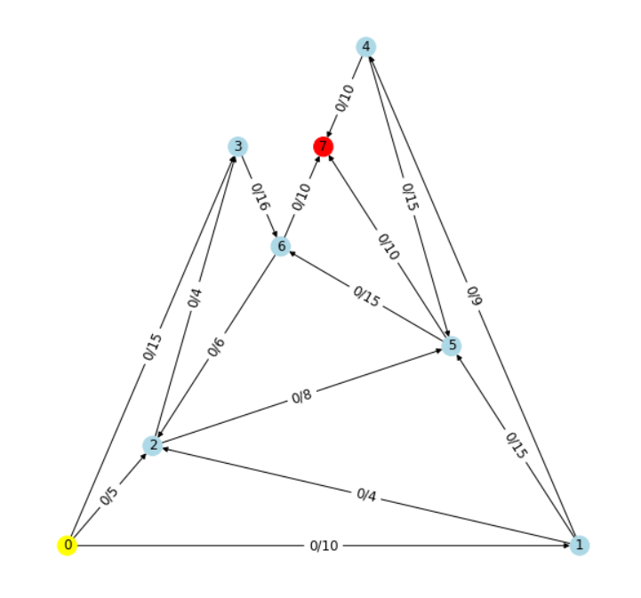
Number of Nodes: 8
Number of Edges: 15
Source: 0
Sink: 7
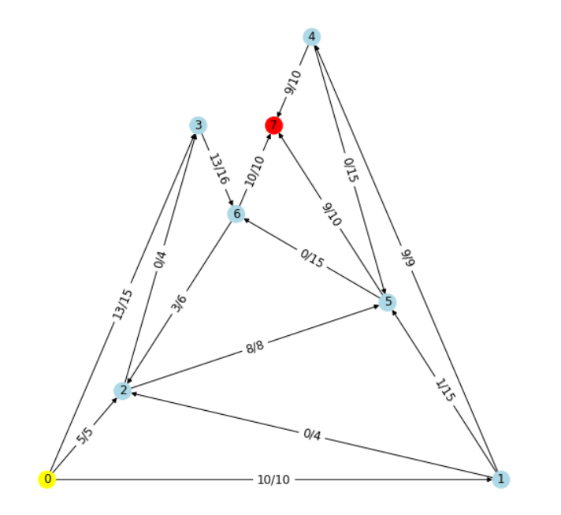
Max Flow = 28
Nodes reachable from source : 0 2 3 6
Nodes not reachable from source : 1 4 5 7 8
Elapsed Time: 0.002999s
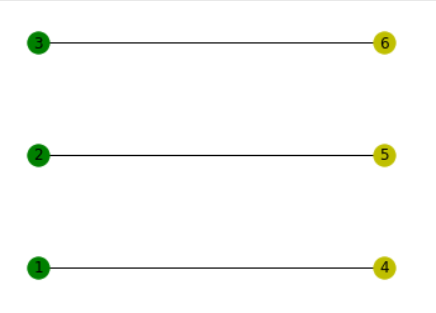
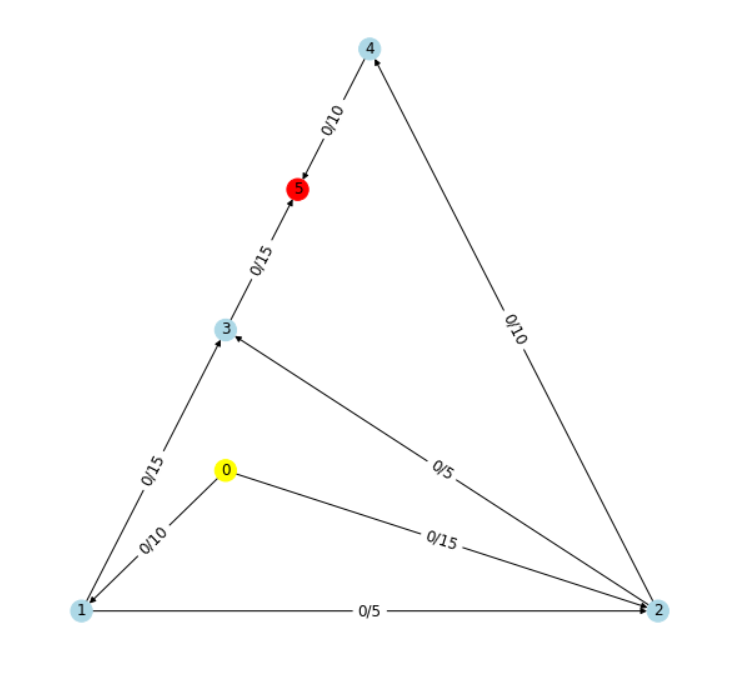
Number of Nodes: 6
Number of Edges: 8
Source: 0
Sink: 5
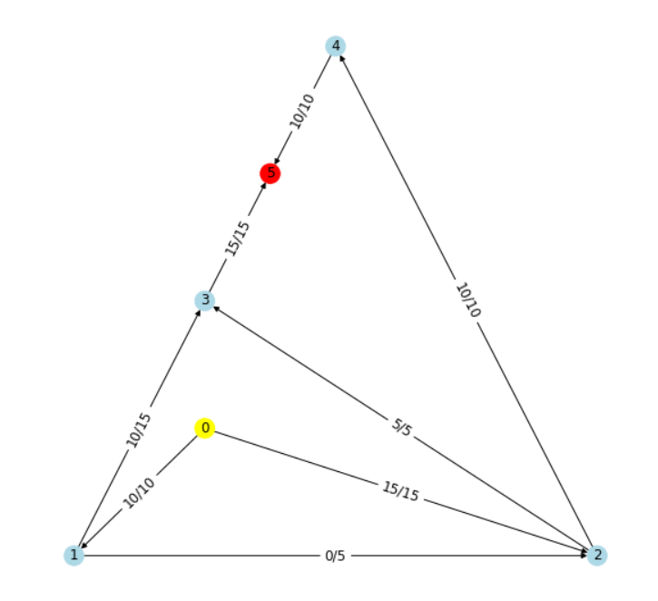
Max Flow = 25
Nodes reachable from source : 0
Nodes not reachable from source : 1 2 3 4 5 6
Elapsed Time: 0.005s
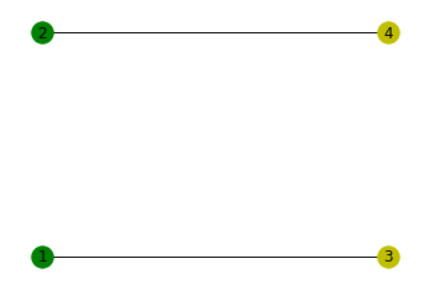
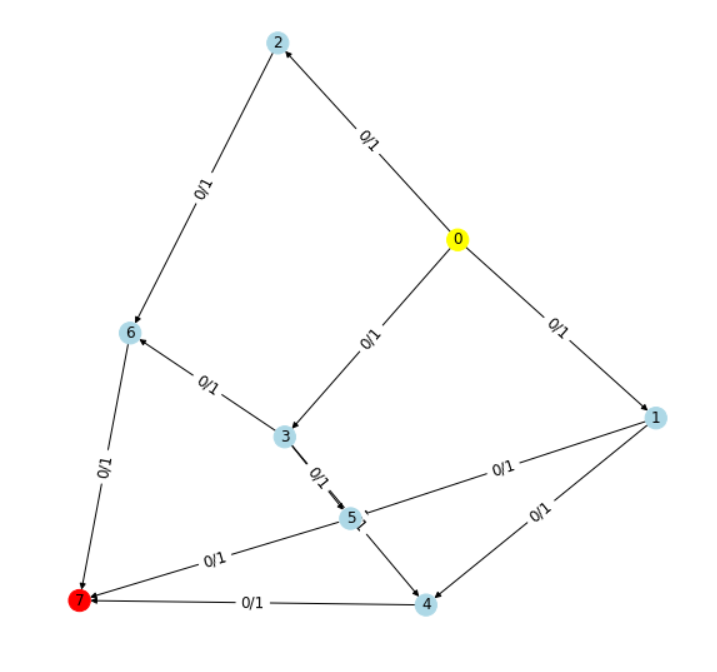
Number of Nodes: 8
Number of Vertices: 12
Source: 0
Sink: 7
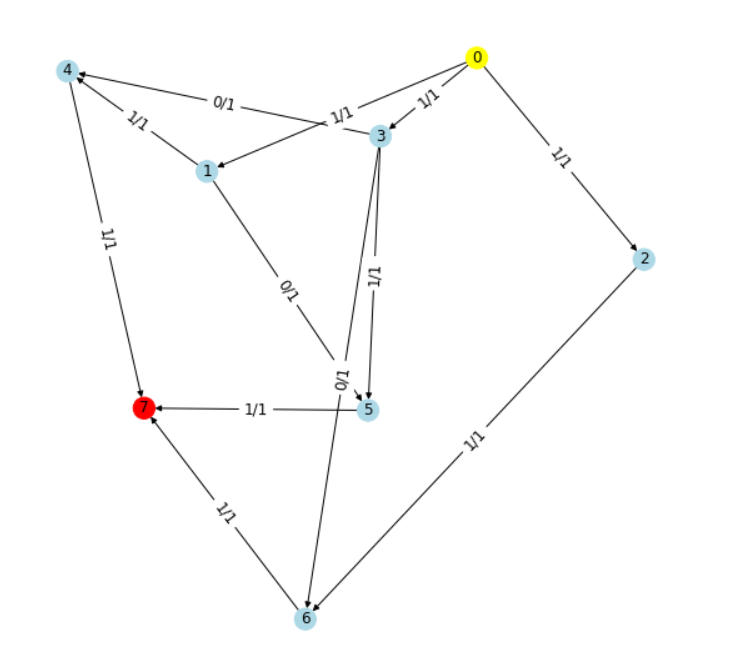
Max Flow = 3
Nodes reachable from source : 0
Nodes not reachable from source : 1 2 3 4 5 6 7 8
Elapsed Time: 0.011999s
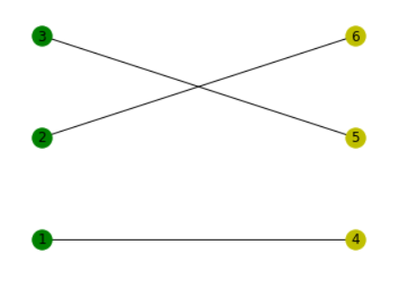
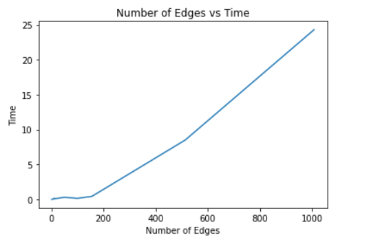
Segmented Least Squares Problem:
The least squares problem is described as follows:
Given n points in the plane: (x1, y1), (x2, y2)...(xn, yn),
find a line y = ax + b that minimizes the sum of squared errors
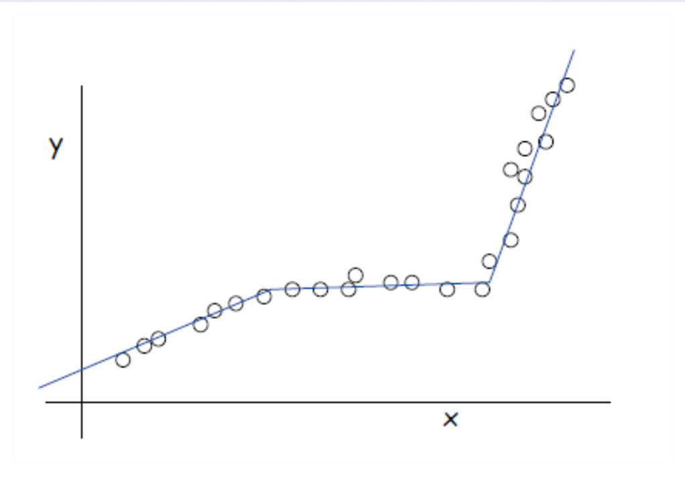
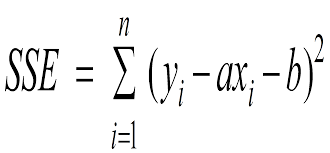
Timing Analysis:
Algorithm's overall time complexity is: O(n^3).
Where, n is the total number of points.
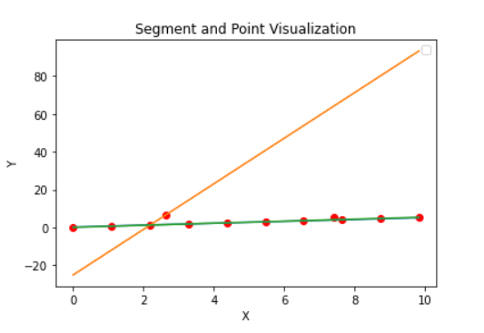
Elapsed Time: 0.001997s
Number of points: 12
Cost: 3.86324951919906
SSE VALUE: 12.9137
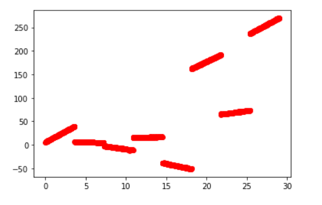
Elapsed Time: 190.706s
Number of points: 2440
Cost: 33
SSE VALUE: 316.726
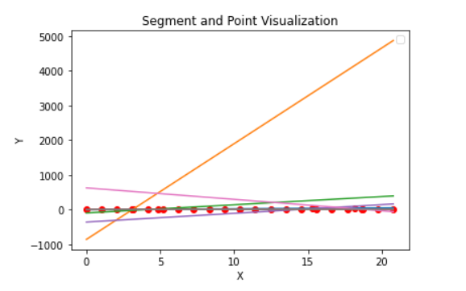
Elapsed Time: 0.003s
Number of points: 27
Cost: 37.59281911609035
SSE VALUE: 316.726